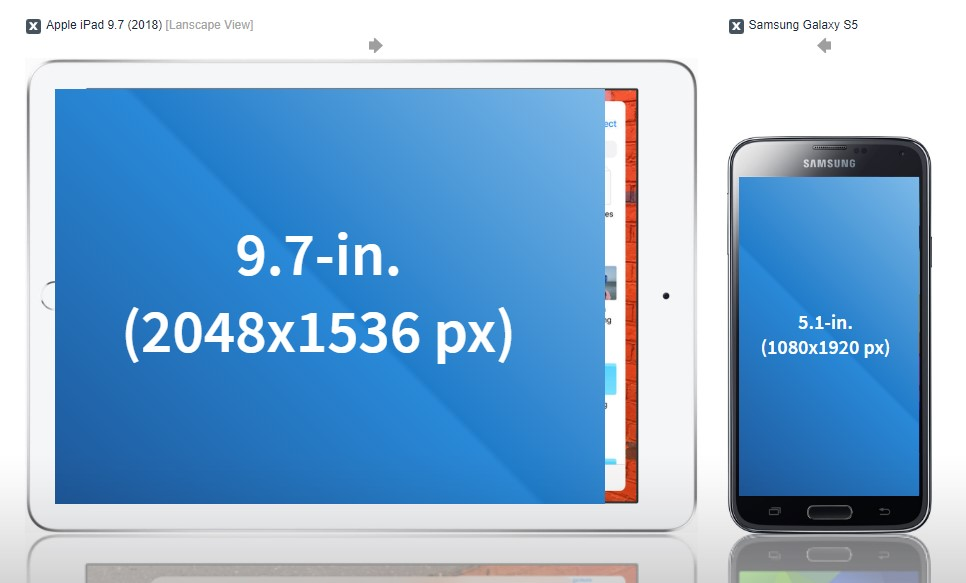

What are CSS BREAKPOINTS?
Breakpoints are a very useful feature of CSS you can use to your advantage when creating a responsive webpage. Breakpoints can be based on device or content. It is recommended that you set them according to your content, because devices come and go and ideally you would like to make your page last longer than the lifespan of devices. Let's say you want your page to look differently on different devices, your tablet and your smartphone, for instance. Assuming your tablet is an iPad and it has a resolution of 2048x1536 pixels distributed over 9.7 inches (and you use it on landscape mode) and your smartphone's screen has a resolution of 1080x1920 (and you like using it on portrait mode). When you put them side by side they would look like this:
(When using Chrome or Firefox press CTRL+SHIFT+i (CMD+SHIFT+i on Macs) to go into developer tools preview, and try resizing the page to see how the content responds to new viewport sizes)
The image above was styled with the following CSS code:
img {
align-items: center;
max-width: 100%;
height: auto;
border-radius: 15px;
}
Since the viewports are different in size and pixel density it is best if you define breakpoints in your style sheet, so the browser knows when to display your page elements side by side, or stack them (if you're using grids). In sum, you can make the elements on your page behave differently based on the device or screen orientation that the user is viewing it, or, even better, the size of the viewport.
You can set your page to have many columns when showing on a desktop computer or as a single column on mobile:
/* For desktop: */
.col-1 {width: 8.33%;}
.col-2 {width: 16.66%;}
.col-3 {width: 25%;}
.col-4 {width: 33.33%;}
.col-5 {width: 41.66%;}
.col-6 {width: 50%;}
.col-7 {width: 58.33%;}
.col-8 {width: 66.66%;}
.col-9 {width: 75%;}
.col-10 {width: 83.33%;}
.col-11 {width: 91.66%;}
.col-12 {width: 100%;}
@media only screen and (max-width: 768px) {
/* For mobile phones: */
[class*="col-"] {
width: 100%;
}
}And it would look something like this on desktop and mobile respectively:


Other examples of breakpoints:
@media only screen and (max-width: 600px) {
body {
background-color: lightblue;
}
}or
.img-container {
width:auto;
text-align:center;
padding:20px;
}
img {
width: 100%;
height: 100%;
object-fit: contain;
}